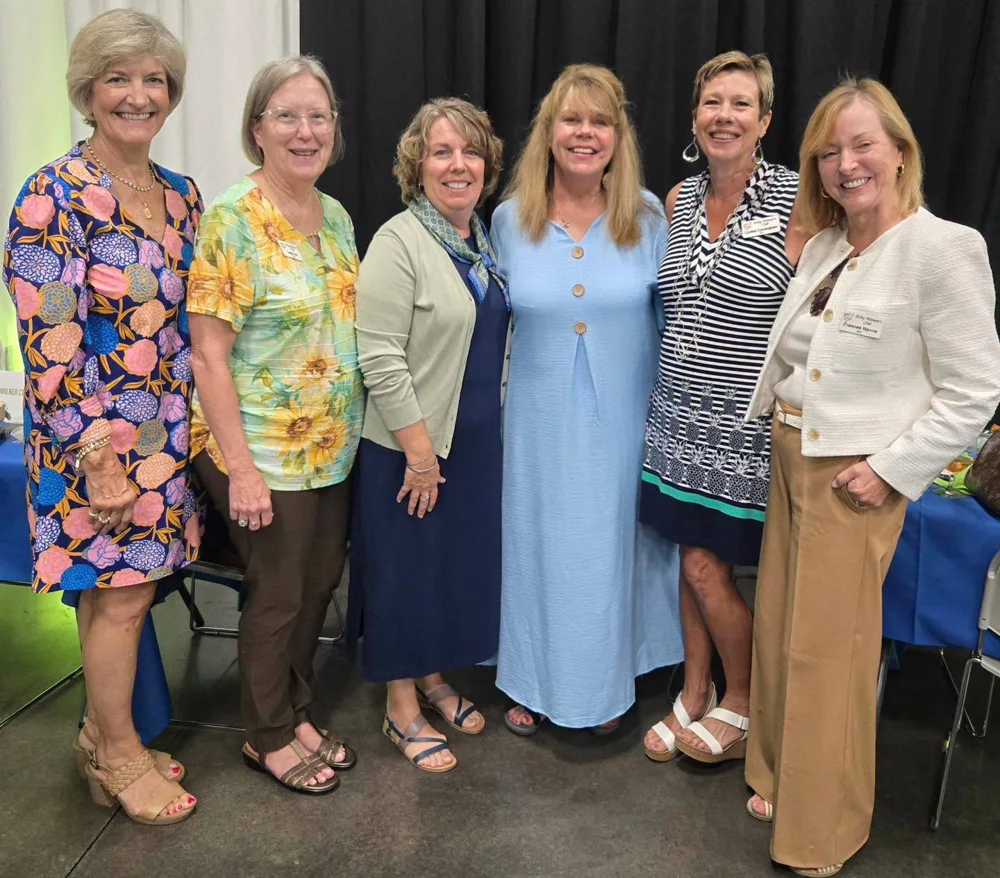
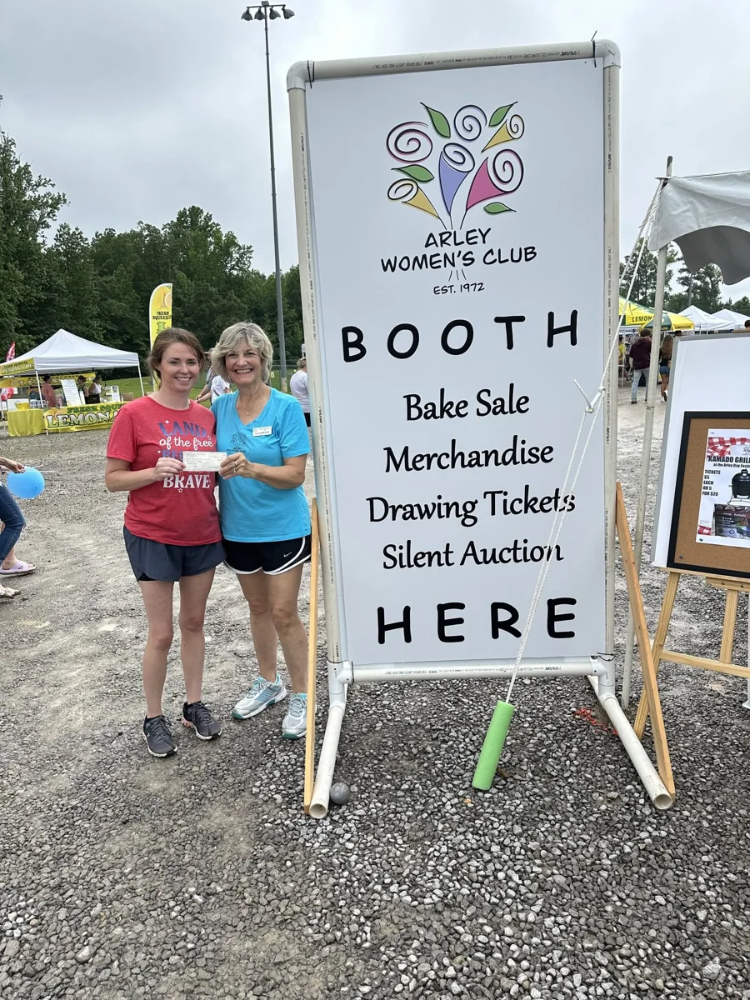
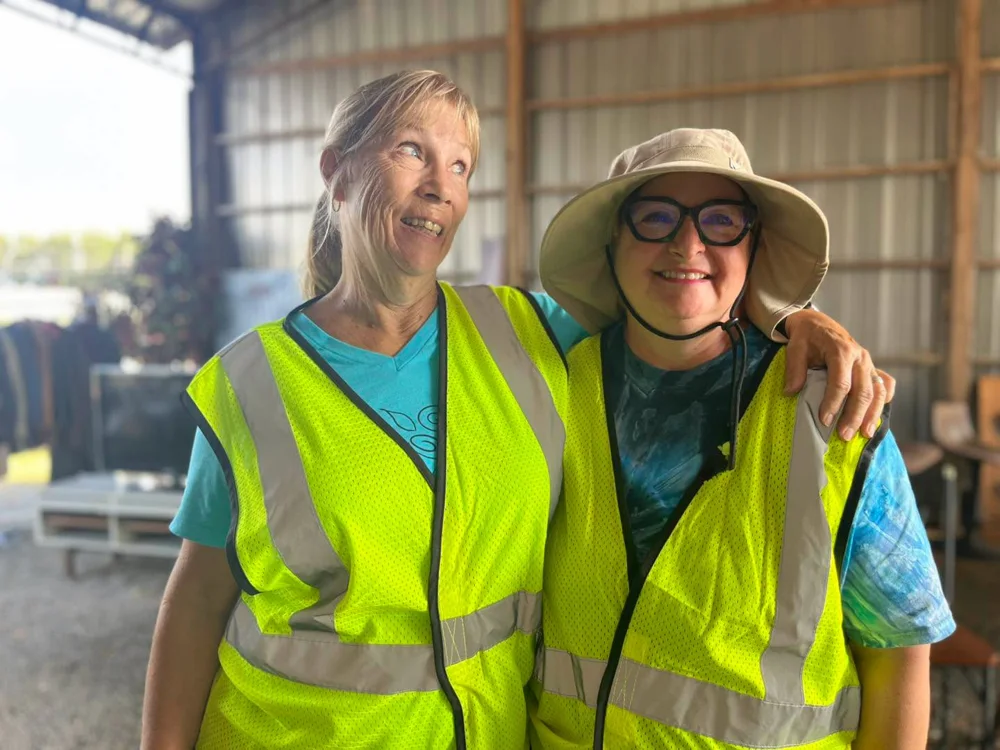
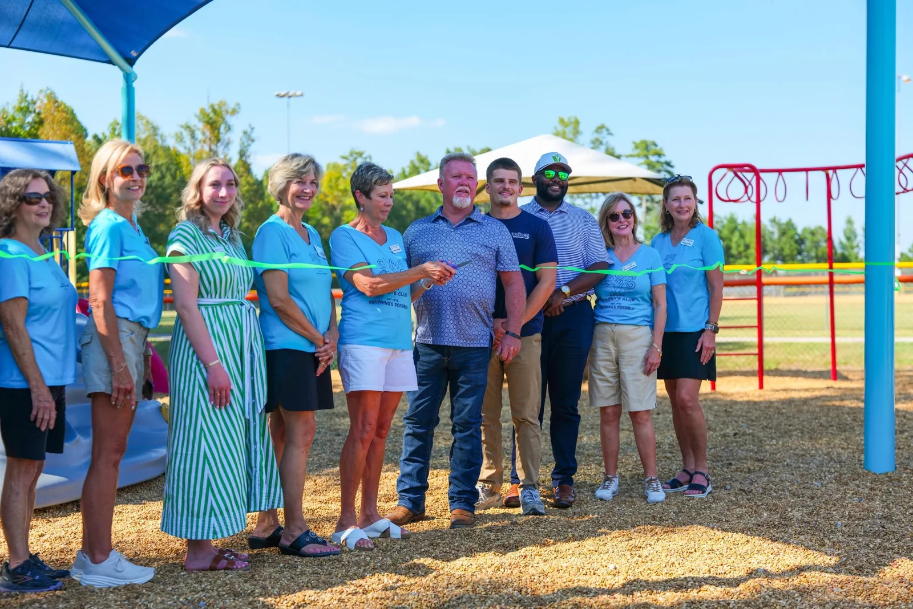
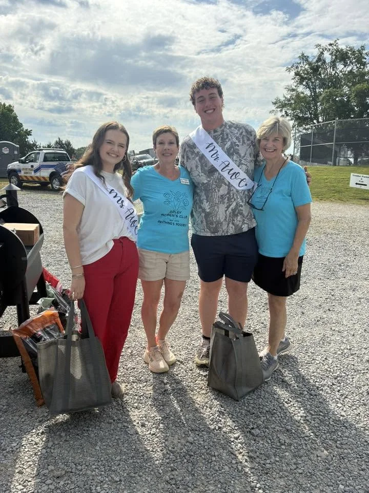
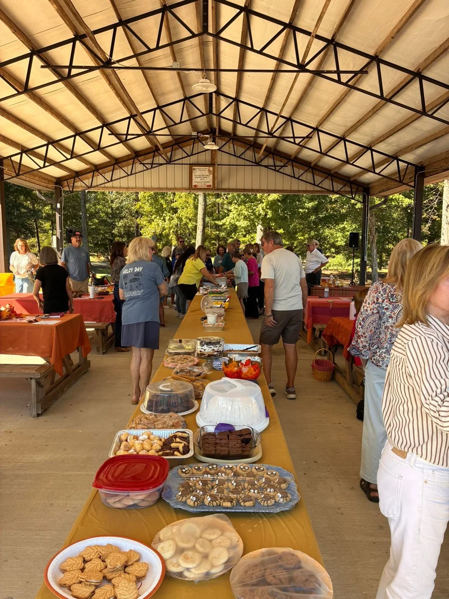

Care for your community.
Help carry forward a tradition of supporting our library, local schools, parks and community organizations.
MEMBERSHIP & GET INVOLVED
A shared love for Arley.
A little time, a helping hand, your own way to contribute.
Bring your interests, your ideas and the time you have. Let’s talk about how you might take part in the community we care for.

A SHARED PURPOSE, MANY WAYS TO PARTICIPATE
Membership means joining a club devoted to improving life in Arley and the surrounding area through volunteer service, charitable giving and community engagement.
Help carry forward a tradition of supporting our library, local schools, parks and community organizations.
The club’s pledge asks members to contribute to the best of their ability. Share your interests and schedule so you can discuss a practical way to take part.
Members support the mission and uphold the club’s conduct standards and bylaws. You can read the full pledge below before asking about joining.
Wondering about time? Let’s start with your questions. Specific meeting, attendance and volunteer commitments are pending club confirmation.
Read the membership pledge (PDF, opens in a new tab)ONE DETAIL, UP FRONT
We want you to know what to expect before you decide to join.
The annual amount, due date and payment method still need the club’s confirmation. The membership agreement states that fees paid are non-refundable.
FIND YOUR WAY TO LEND A HAND
These are examples of the club’s work. Ask about current opportunities and what each one involves—there’s room for a conversation about your interests and availability.

Explore the club’s community events and fundraising efforts, including the Arley Day tradition.
Ask about events
From community outreach to caring for shared spaces, ask where a helping hand is needed now.
Ask about volunteering
Learn about AWC’s support for Hamner Memorial Park, the Arley Public Library and local schools.
Explore our shared purposeCurrent openings, schedules and project responsibilities: pending club confirmation.
IT’S OKAY TO HAVE QUESTIONS
Curious but not quite sure? A conversation is a good place to begin.

The pledge asks you to contribute to the best of your ability, but it doesn’t set a number of volunteer hours. Ask the club how its current needs might fit your schedule.
To confirm: any minimum hours, attendance expectations and meeting schedule.
Tell the club what you enjoy and what you’d like to try. You can ask what experience, training or support is needed for any opportunity that interests you.
To confirm: eligibility and any role-specific requirements.
Share your availability when you inquire. Ask about ways to stay involved during busy seasons and how members handle changing schedules.
To confirm: options for members with limited or changing availability.
It covers support for the mission, contributing to the best of your ability, conduct that protects the club’s reputation, and following the pledge and bylaws. It also addresses non-refundable fees and the board’s ability to suspend or terminate membership following conduct concerns and review.
Read the full agreement (PDF, opens in a new tab)Start by sending your questions through the club’s existing contact page. Ask about membership, the current schedule, or an area of service that interests you.
To confirm: whether prospective members may visit a meeting or try an activity before joining.
Use the membership inquiry link below to contact the club. This concept page does not accept applications, signatures or dues payments.
To confirm: application steps, eligibility, approval process and how to pay dues.

YOU DON’T HAVE TO HAVE IT ALL FIGURED OUT
Interested in joining, or just wondering where you might fit? Tell the club a little about yourself, what interests you and any questions you have.
Join / Membership inquiry (opens the club’s contact page in a new tab)Opens the current club website’s contact page. No application or payment is submitted here.